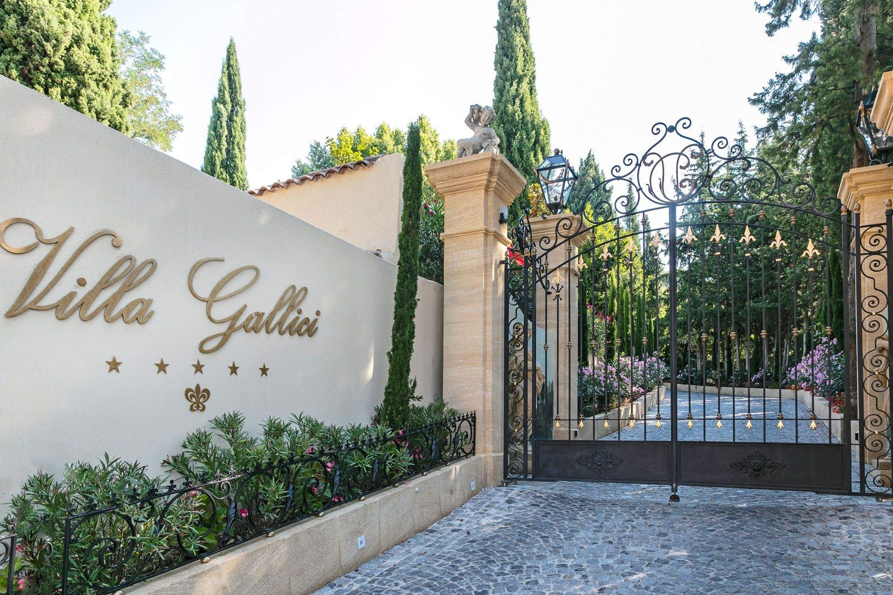
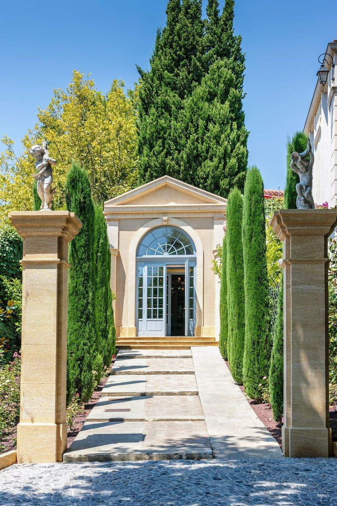
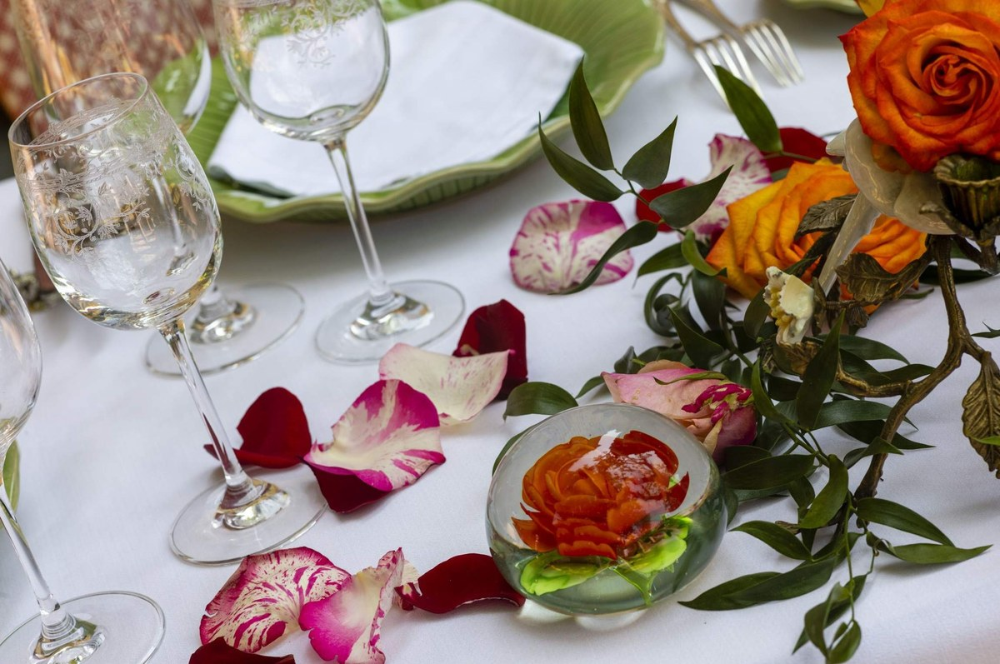

Villa Gallici Aix-en-Provence : avis complet sur ce 5 étoiles baroque entre Provence et Italie
Une bastide du XVIIIe siècle devenue collection privée vivante, vingt-trois chambres dont aucune ne ressemble à l'autre, et une dolce vita provençale assumée jusqu'au dernier détail.

Le portail, avenue de la Violette. Photo : Villa Gallici, site officiel.
L'essentielVilla Gallici en chiffres
- Score LMHS 9,1/10 et Indice Provence 4,7/5, nos deux données propriétaires.
- 5 étoiles Relais & Châteaux, 23 chambres et suites, toutes différentes.
- À partir de 955 € la nuit, au 18 avenue de la Violette, à moins de cinq minutes du centre d'Aix.
Une bastide XVIIIe transformée en collection privée vivante
Villa Gallici n'est pas un hôtel comme les autres. C'est une bastide du XVIIIe siècle, autrefois demeure d'un marchand d'art voyageur, que trois esthètes ont reprise dans les années 90 avant qu'elle ne passe aux mains de la famille Polito. Dès l'entrée, vous comprenez que vous ne dormirez pas dans une chambre standardisée, mais dans une pièce d'une collection privée cohérente et assumée. L'atmosphère oscille entre palais baroque et maison de famille, où chaque détail raconte une histoire. Les tissus damassés, les velours épais, les tapisseries anciennes, les plafonds décorés et les petites statues de perroquets dispersées partout créent une esthétique maximaliste qui fonctionne parce qu'elle est pensée, maîtrisée, délibérée. C'est l'inverse du chaos, c'est une philosophie de vie. Vous entrez dans la dolce vita provençale revisitée par des collectionneurs qui savent ce qu'ils font.
Les chambres et suites : 23 univers différents, chacun avec son âme
Les 23 chambres et suites de Villa Gallici sont toutes différentes. Pas de clonage, pas de standardisation. Chacune porte l'empreinte des créateurs originaux, avec des tissus brodés, du mobilier ancien, des objets chinés qui ont une provenance, une histoire. Certaines suites conservent les broderies des esthètes qui ont imaginé les lieux ; d'autres portent le prestige d'avoir accueilli Pierre Bergé, le fondateur d'Yves Saint Laurent. Les suites avec vue sur les jardins offrent cette lumière provençale du matin que les photographes recherchent. Pour ceux qui veulent l'intimité absolue, la Villa Cézanne est une maison privée de 80 m² nichée dans le jardin, équipée de son propre jacuzzi privatif. C'est le choix des couples en quête de solitude luxueuse, loin des regards, mais sans renoncer aux services de l'établissement. Chaque chambre est un argument pour rester, pas une simple case à cocher.

Photo : Villa Gallici, site officiel.
Le spa : un pavillon XVIIIe siècle dédié au bien-être
L'espace bien-être de Villa Gallici occupe 200 m² dans un pavillon XVIIIe siècle positionné au bord du jardin, comme s'il avait toujours été là. Jacuzzi, sauna, cryothérapie, cabines de soins Sothys : tout ce qu'il faut pour une pause régénérante. Mais ce qui distingue ce spa, c'est son intégration harmonieuse à l'environnement. Vous ne sortez pas d'une chambre climatisée pour entrer dans un bunker de bien-être ; vous traversez les jardins, vous respirez la lavande, vous entendez les fontaines, puis vous franchissez le seuil du pavillon. C'est une transition, pas une rupture. Les soins Sothys sont administrés par une équipe qui comprend que le luxe, c'est aussi la discrétion et l'écoute. Vous venez chercher du repos, vous repartez apaisé.
La Taula Gallici : Christophe Gavot et vingt ans de dialogue Provence-Italie
Christophe Gavot dirige la cuisine de Villa Gallici depuis plus de vingt ans. C'est un engagement rare, une signature. Son approche est un dialogue constant entre la Provence et l'Italie, nourri par les produits de saison et les poissons méditerranéens. La dorade méditerranéenne à l'infusion de verveine, le mulet aux asperges vertes et moutarde de Chinotto : ce ne sont pas des plats qui cherchent à impressionner par la complexité, mais par la justesse. Les accords mets-vins sont sophistiqués, avec des options sans alcool pour ceux qui le souhaitent. Le décor du restaurant respire le formalisme baroque : lustres, pétales de roses, vaisselle formelle, tout concourt à créer une atmosphère de célébration. En belle saison, la terrasse s'ouvre sur les jardins, et le bruit des fontaines devient la bande sonore de votre repas. La Dolce Serata, la version informelle du restaurant, prend vie l'été avec des assiettes à partager et des cocktails, pour ceux qui veulent la gastronomie sans le protocole.

Photo : Villa Gallici, site officiel.
Les jardins et la piscine : un havre provençal chauffé à 28 °C toute l'année
Les jardins de Villa Gallici sont une architecture paysagère pensée. Cyprès, statues, fontaines, allées pavées : chaque élément a sa place. La piscine chauffée à 28 °C toute l'année est bordée de platanes qui offrent une ombre généreuse en été. C'est un espace de détente, pas de performance. Vous venez vous tremper, flotter, laisser le temps s'arrêter. Les jardins changent avec les saisons : le printemps et l'été révèlent leur splendeur, tandis que l'hiver offre une intimité cosy, avec moins de monde et plus de silence. C'est un choix personnel, mais les deux saisons ont leur charme propre. Les jardins ne sont pas un décor, ils sont le cœur battant de Villa Gallici.
Les détails qui font la différence : mille roses, lavande et cave spectaculaire
Villa Gallici excelle dans les détails. Mille roses fraîches sont disposées chaque semaine dans l'établissement, un engagement envers la beauté éphémère. La lavande est le fil conducteur olfactif de votre séjour, présente sans être envahissante. La cave à vins est spectaculaire, architecturée en forme de carafe, un clin d'œil à la culture viticole provençale. Laurent Mounet, le directeur, accueille les clients comme des habitués, créant une atmosphère de familiarité dans le luxe. Le personnel est souriant, attentif, discret. Ces détails ne sont pas des artifices, ils sont la philosophie de Villa Gallici : le luxe, c'est l'attention.
Informations pratiques : accès, tarifs, animaux, meilleure saison
| Adresse | 18 avenue de la Violette, 13100 Aix-en-Provence |
| Téléphone | +33 4 42 23 29 23 |
| Courriel | reservation@villagallici.com |
| Catégorie | 5 étoiles, Relais & Châteaux |
| Capacité | 23 chambres et suites, toutes différentes |
| Tables | La Taula Gallici, chef Christophe Gavot ; La Dolce Serata l'été |
| Bien-être | Spa de 200 m², jacuzzi, sauna, cryothérapie, soins Sothys |
| Piscine | Chauffée à 28 °C toute l'année, au jardin |
| Tarifs | À partir de 955 € la nuit |
| Nos notes | Score LMHS 9,1/10 · Indice Provence 4,7/5 |
Localisation et accès. Villa Gallici est située à moins de cinq minutes du centre d'Aix-en-Provence, à vingt minutes à pied de la gare. Un parking sécurisé est disponible sur place. L'établissement est facilement accessible, tout en restant à l'écart du bruit urbain.
Animaux de compagnie. Les animaux sont les bienvenus, avec un accueil personnalisé. Un supplément de 50 € par nuit s'ajoute au tarif de la chambre.
Meilleure saison. Le printemps et l'été sont idéaux pour profiter des jardins et de la terrasse du restaurant. L'hiver offre une ambiance plus intime et cosy, parfaite pour les couples en quête de sérénité. Villa Gallici fonctionne toute l'année, le choix dépend de votre humeur.
Clientèle. Villa Gallici accueille des couples, des voyageurs internationaux et des résidents locaux, et dispose de suites adaptées aux familles. C'est un établissement inclusif dans son positionnement haut de gamme.
Villa Gallici figure parmi les meilleurs hôtels et spas de France selon le Protocole LMHS, aux côtés d'autres établissements de référence.
Comme le Château de la Chèvre d'Or, sur la Côte d'Azur, Villa Gallici maîtrise l'art de transformer une demeure historique en destination contemporaine sans renier son passé.
Son spa de 200 m² rivalise avec les meilleurs spas de jour en termes de qualité des soins et d'intégration paysagère, bien qu'il soit réservé aux résidents.
Questions fréquentes sur Villa Gallici
Quelle est la différence entre les chambres de Villa Gallici ?
Chacune des 23 chambres et suites est unique, avec son propre décor, ses tissus brodés, son mobilier ancien et ses objets chinés. Certaines conservent les broderies des créateurs originaux, d'autres ont accueilli des personnalités comme Pierre Bergé. Il n'y a pas deux chambres identiques.
La piscine est-elle chauffée en hiver ?
Oui, la piscine est chauffée à 28 °C toute l'année, ce qui permet de nager confortablement même en hiver. Elle est bordée de platanes qui offrent une ombre généreuse en été.
Quel est le prix d'une nuit à la Villa Gallici ?
Les chambres commencent à partir de 955 € la nuit. La Villa Cézanne, maison privée de 80 m² avec jacuzzi privatif, et les suites premium se situent au-delà de ce tarif. Les prix reflètent le positionnement haut de gamme et l'unicité de chaque espace.
Quel est le meilleur moment pour visiter Villa Gallici ?
Le printemps et l'été sont idéaux pour profiter des jardins et de la terrasse. L'hiver offre une ambiance plus intime et cosy. Villa Gallici fonctionne toute l'année, le choix dépend de vos préférences saisonnières.
Les animaux de compagnie sont-ils acceptés ?
Oui, les animaux de compagnie sont les bienvenus, avec un accueil personnalisé. Un supplément de 50 € par nuit s'ajoute au tarif de la chambre.
Le mot de SwannLe luxe, ici, c'est l'attention
Il y a des maisons qui décorent, et il y en a qui collectionnent. Villa Gallici appartient à la seconde catégorie, et cela se sent dès le portail : rien n'y est arrivé par hasard, ni les damas, ni les perroquets de porcelaine, ni les mille roses renouvelées chaque semaine. Dans une région où l'on confond souvent authenticité et dépouillement, cette maison assume le maximalisme et le tient jusqu'au bout, avec une cohérence que peu d'adresses françaises atteignent. Vingt ans de fidélité d'un chef, un directeur qui vous accueille comme un habitué, un jardin où l'on entend les fontaines : c'est une philosophie de l'hospitalité plus qu'un hôtel.
Swann Bertaud, rédacteur hôtellerie de luxe
Méthode et sources
Avis noté 9,1/10 au Score LMHS et 4,7/5 à l'Indice Provence, nos deux données propriétaires, issues du Protocole LMHS et de sa grille Destination. Adresse, capacité, tables, équipements de bien-être et coordonnées relevés le 28 août 2026. Aucun partenariat commercial, aucune affiliation. Photographies : site officiel de l'établissement.
Pour aller plus loin
- Hôtel & Spa du Castellet, dans le Var, un 5 étoiles provençal à table trois étoiles
- Hôtels de charme en Provence : 12 maisons d'exception
- Les 50 meilleurs hôtels et spas de France, palmarès national 2026
- Château de la Chèvre d'Or, Èze, avis, une autre maison qui a fait de son bâti son argument
- Notre méthode, les grilles de notation et les règles d'indépendance